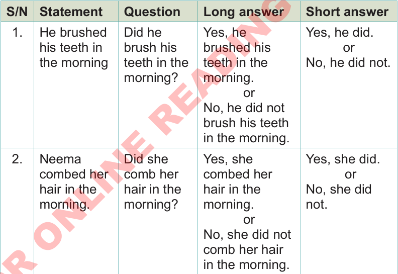

(d) Use the three ways of answering questions to answer the following questions.
- 1. Did you go to school last Friday?blank
- 2. Didn’t your brother tell you a story yesterday?blank
- 3. Did it rain last week?blank
- 4. Did you buy guavas last Sunday?blank
- 5. Did your friend give you a book yesterday?blank
(e) Study the information in the table below. Then, describe the changes observed in each column.

S/N Statement Question Long answer Short answer